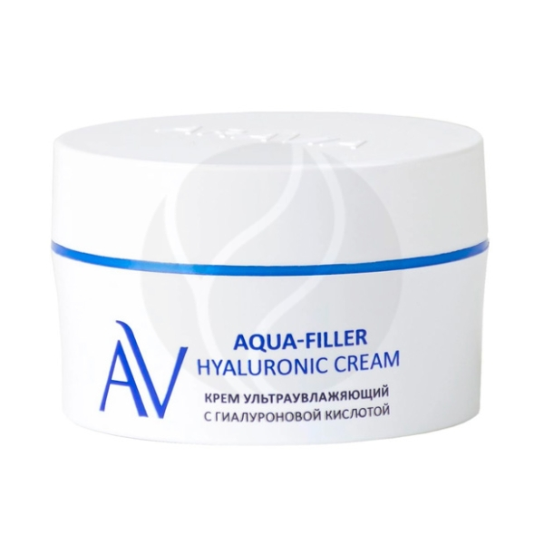
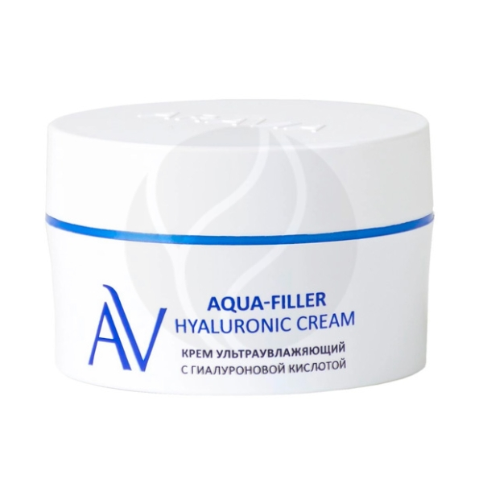

| Название | Состав | Цена | Внешний вид |
|---|---|---|---|
| Aravia Aqua-Filler крем ультраувлажняющий с гиалуроновой кислотой, 50мл | Аqua, Propylene Glycol, Ethylhexyl Stearate, Cyclopentasiloxane, Glycerin, Butylene Glycol, Betaine, Urea, Phenoxyethanol, Peg-240/hdi Copolymer Bis-decyltetradeceth-20 Ether, Sodium Polyacrylate, Ethylhexyl Cocoate, Methylparaben, Aloe Barbadensis Leaf Extract, Calendula Officinalis Flower Extract, Chamomilla Recutita Flower Extract, Parfum, Propylparaben, Polysorbate 20, Xanthan Gum, Ethylparaben, Ppg-3 Benzyl Ether Myristate, Sodium Hyaluronate, Citric Acid, Hexyl Cinnamal, Potassium Laurate, Tocopherol. | 1185 |  |
| SO'BiOetic крем для рук с маслом Ши ультрапитательный, 75мл | AQUA (WATER), GLYCERIN, CAPRYLIC/CAPRIC TRIGLYCERIDE, BUTYROSPERMUM PARKII (SHEA) BUTTER, CETEARYL ALCOHOL, HELIANTHUS ANNUUS (SUNFLOWER) SEED OIL, GLYCERYL STEARATE CITRATE, GLYCERYL STEARATE SE, BENTONITE, SODIUM LEVULINATE, SODIUM BENZOATE, LAUROYL LYSINE, XANTHAN GUM, PARFUM (FRAGRANCE), PHYTIC ACID, ALOE BARBADENSIS LEAF JUICE POWDER, PHOSPHOLIPIDS, SODIUM HYDROXIDE, LACTIC ACID, LINALOOL, LIMONENE, CITRONELLOL, EUGENOL, BENZYL BENZOATE. | 529 | |